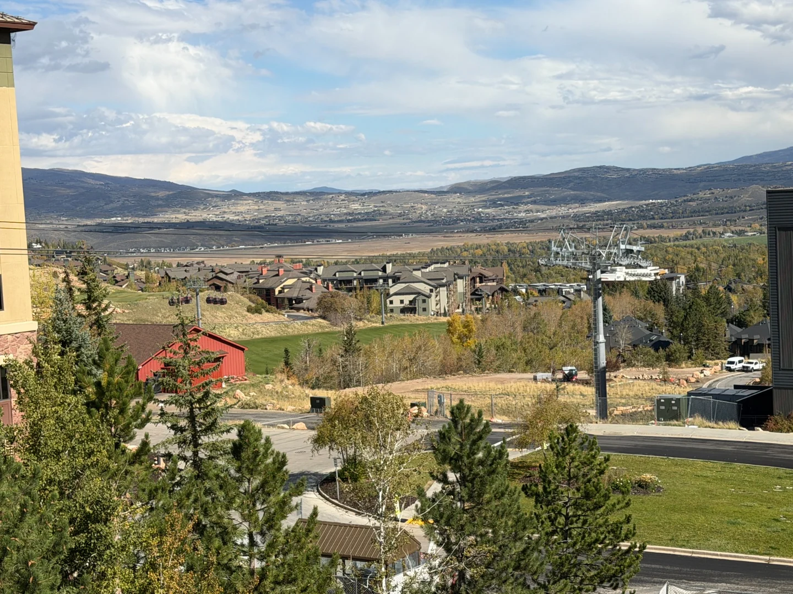

The Snow League arrives at Park City Mountain on 21 to 23 January 2027, bringing a 22-foot halfpipe and three days of competition to a resort that has not had a pipe that size since 2019. If you are looking at the Snow League in Park City and wondering where to stay, the answer turns on something most write-ups skip: which end of the resort the halfpipe is built on.

What The Snow League is
The Snow League is Shaun White's competition series, built around halfpipe snowboarding and freeskiing in a head-to-head knockout format rather than the single-run scoring most contests use. Season Two runs three stops: Aspen Snowmass on 7 to 9 January 2027, Park City on 21 to 23 January, and LAAX in Switzerland on 11 to 13 March.
Park City is the new addition, and the resort is building a 22-foot pipe for it, the first of that scale there since the 2019 FIS World Championships. It is broadcast live on Peacock and the league's YouTube channel, and televised events pull in people who would not otherwise book a January week.
When is The Snow League in Park City?
21 to 23 January 2027, Thursday to Saturday, per the league's own event page and its October 2026 ticket announcement.
Worth knowing before you book flights: an earlier announcement from March 2026 gave 22 to 24 January, and that older range is still sitting in plenty of event roundups. The dates moved. A day's error on a non-refundable flight is an expensive way to learn that listings go stale.
Aggregators rarely revisit a page once published. For anything dated, the league's site and the resort's are the only two we would trust. The same goes for the season, which Park City Mountain schedules as 20 November 2026 to 19 April 2027, weather dependent; the calendar is in the Park City ski season 2026-27.
Where the halfpipe actually is
Park City Mountain is one resort with two separate base areas, fifteen minutes apart by road. Canyons Village sits at the north end; the Park City base, at the bottom of Main Street, sits at the south end. They are joined across the top by the Quicksilver Gondola, and not at all at the bottom.
Reporting on the construction places the Snow League pipe at the base of Scott's Bowl, on terrain reshaped near the Eagle and Three Kings lifts, with parts of Lower Silver Spur closed through the summer for the work. Eagle and Three Kings are at the Park City base: the competition is at the town end of the resort, not in Canyons Village.
So if someone tells you to book slopeside for the Snow League, ask which slope. A ski-in unit at the wrong base is a daily commute you did not plan for. We compared the two sides in Canyons Village vs the Park City base.
Reaching the venue from Canyons Village
On skis, over the top. With a valid pass you cross on the Quicksilver Gondola, the eight-person gondola that has linked the two bases since 2015-16, which makes the trip part of the ski day rather than an errand. Which lift to take out of the village is mapped in the Canyons Village lift map, and since Quicksilver is a ski lift it needs a pass; lift tickets and the Epic Pass covers what each product includes.
By bus. Park City's town bus is free and connects the two bases by road. For a spectator without a lift ticket this is the sensible route, though allow longer than the map suggests on an event day.
By car. The option we would avoid: parking at the town base is constrained on an ordinary January Saturday, and the Canyons Village garage is no longer free either. If you are weighing a hire car, do you need a car in Park City goes through it.
One caveat: the league says its spectator experiences are still to be announced, so treat the above as geography rather than the official plan.

What happens on each of the three days
The format is a knockout, so the days are not interchangeable.
| Day | Format | General admission | Snow Deck VIP |
|---|---|---|---|
| Thu 21 Jan | Qualifying. Heats of best-of-two runs, heat winners advance | $10 | $150 |
| Fri 22 Jan | Quarterfinals. Top eight from qualifying, head to head | $10 | $175 |
| Sat 23 Jan | Finals. Top four, head to head | $25 | $225 |
Those are the league's listed rates at the time of writing; a VIP table is sold separately and start times had not been published. If you are picking one day, Saturday is the final and the atmosphere, while Thursday qualifying is the quiet day and the easiest to absorb into a ski day.
The villa these guides are written from
We own a Premier Two-Bedroom Villa inside Westgate Park City Resort, in Canyons Village. It is 1,100 square feet, two king bedrooms and two queen sleeper sofas, so it sleeps eight in one unit. Full kitchen, a kitchenette in the lock-off studio, two bathrooms with walk-in showers, and a short walk to the Red Pine Gondola.
To be straight with you: our own open weeks this season are Presidents' Week, 13 to 20 February 2027, and spring break, 21 to 28 March 2027, not the Snow League weekend. If late January is what you want, ask anyway and we will tell you honestly what we can and cannot do.
Where to stay, and why the weekend books out
Late January has historically been one of the better value windows of a Park City season: good snow, shorter queues, lower rates than mid-February. The Snow League does not undo that for the whole month, but it concentrates demand on one weekend. Treat the 21st to the 23rd as peak-rate even though the fortnight around it is not.
Book earlier than the rate suggests. Family-sized units, anything sleeping six or more, are the thinnest part of the Park City market and go first regardless of season. The windows are in when to book Park City for a peak week.
Decide which base you want before you book. If the competition is the trip, the town side is nearest the pipe and Main Street. If it is one day of a ski week, Canyons Village is the better base. Our photo gallery is all shot from the villa and the village around it, which is the honest way to judge a base.
Watch the rest of the month. The Epic passholder party at Red Pine Lodge falls on 29 January and the Deer Valley freestyle World Cup at the end of it. For a quiet January week, aim for mid-month.
None of which makes this a bad week to come. Twenty-five dollars for a world-class halfpipe final is the cheapest sport you will watch this year. It simply rewards booking like you mean it.
Common questions
What are the Snow League Park City 2027 dates?
21 to 23 January 2027, per the league's own event page and its October 2026 ticket release. An earlier March 2026 announcement said 22 to 24 January and is still repeated in places, so check the league's site rather than a roundup.
Where is the Snow League halfpipe at Park City Mountain?
Reporting on the construction places it at the base of Scott's Bowl, on terrain reshaped near the Eagle and Three Kings lifts: the Park City base side, the town side, not Canyons Village.
Can I get to the Snow League from Canyons Village?
Yes. The two bases are one resort, linked across the top by the Quicksilver Gondola, so with a valid pass you can ski over. Without a lift ticket, the free Park City town bus connects them by road.
How much do Snow League tickets cost?
General admission is listed at 10 dollars on the Thursday and Friday and 25 dollars for the Saturday final, with Snow Deck VIP at 150, 175 and 225 dollars. Prices change, so buy from the league directly.
Is it worth staying slopeside for the Snow League weekend?
If the competition is the whole trip, the town side puts you nearest the pipe. If you are there to ski and watch the Saturday final, Canyons Village is the better base and the gondola link makes the venue a morning out.
Does the Snow League weekend make Park City harder to book?
Late January was already a solid booking window, and a televised competition adds demand to a fixed supply of beds. Treat 21 to 23 January 2027 as peak-rate and book months ahead.